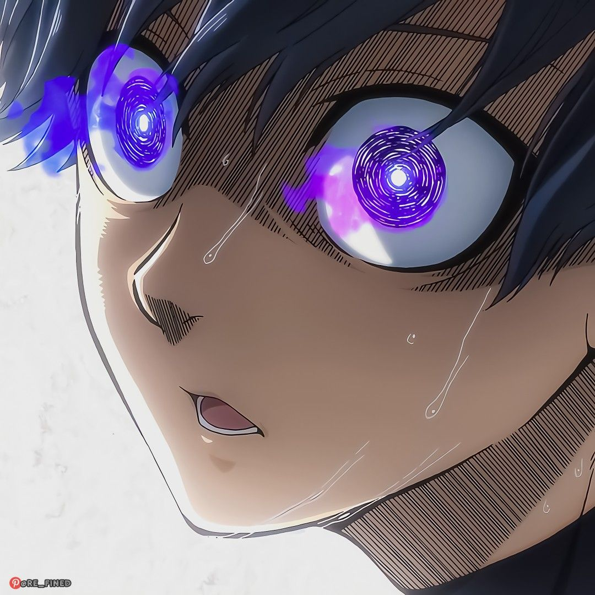

|  |
Isagi Yoichi
Football player
Protagonist in
Blue Lock
Position
- Forward
- Offensive Midfilder
|
Isagi is a second-year high school student, who previously played as a
forward for the Ichinan High School football team. When he arrived at the
Blue Lock facility, he became a member of Team Z for the First Selection.
His main goal is to become the world's best striker.
| Skills |
Rating |
| Spatial Awareness |
⭐⭐⭐⭐⭐ |
| Adaptabilty |
⭐⭐⭐⭐⭐ |
Skills
-
Spatial Awareness
-
Direct Shot
-
Off the Ball Movements
- Reflex
-
Metavision
- Flow state
Quotes By Isagi
-
Football is a sport played with 11 people. So, one person can't win on
their own. Football isn't just for one... One for all... I wanted to
win!
-
I didn't come to trample on others... To become the best in the world!!
I came here... So I need to defeat those who are stronger than me! Or
else, Nothing will change!!
-
ou shouldn't aim to be the one that get's chosen, but, instead, the one
that chooses.
Trivia
| Team |
Rank |
| Team Z |
|
| Blue lock Eleven |
|
| Japan U-20 |
|